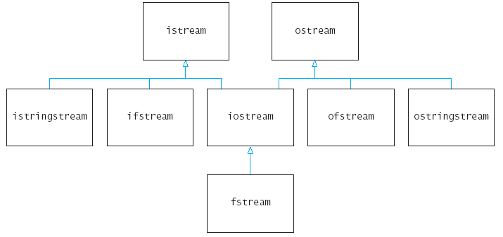

ifstream input_data;
input_data.open("input.dat");
int n;
double x;
input_data >> n >> x;
string s;
input_data >> s; /* read a word */
getline(input_data, s); /* read a line */
char ch;
input_data.get(ch);
char ch;
input_data.get(ch);
if ('0' <= ch && ch <= '9') /* it was a digit */
{
input_data.unget(); /* oops - didn't want to read it */
int n;
input_data >> n; /* read integer starting with ch */
}
input_data.close();
ofstream output_data;
output_data.open("output.dat");
output_data << n << " " << x << "\n";
output_data.put(ch);
output_data.close();
datafile.open("employee.dat", ios::in | ios::out).
input_data.open("input.dat");
or a string variable that contains a file
name.
string input_name =
cwin.get_string("Please enter the file name:");
ifstream input_data;
input_data.open(input_name);
input_data.open(input_name.c_str());
input_data.open("c:\\homework\\input.dat");

double rand_data(istream& in);
max = read_data(infile);
max = read_data(cin);
string input = "January 23, 1955";
istringstream instr(input);
string month;
int day;
string commma.
int year;
instr >> month >> day >> comma >> year;
int string_to_int(string s)
{
istringstream instr(s);
int n;
instr >> n;
return n;
}
ostringstream outstr;
outstr << setprecision(5) << sqrt(2);
string output = outstr.str();
string month = "January";
int day = 23;
int year = 1955;
ostringstream outstr;
outstr << month << " " << day << "," << year;
string output = outstr.str();
string int_to_string(int n)
{
ostringstream outstr;
outstr << n;
return outstr.str();
}
21:30
9:30 pm
9 am
prog -v input.dat
int main(int argc, char* argv[])
{
. . .
}
argv[0]:
"prog" argv[1]:
"-v" argv[2]:
"input.dat"
Plain Text
M e e t
m e
a t . . .
Encrypted Text
P h h w
p h
d w . . .
caesar input.txt encrypt.txt
caesar -d -k11 encrypt.txt output.txt
fs.seekg(n, ios::beg);
fs.seekp(n, ios::beg);
n = fs.tellg();
n = fs.tellp();
fs.seekg(0, ios::end);
long file_length = fs.tellg();
Then raise Harry's salary by 5.5 percent to $36,397.50.
The update overwrites some characters in the next field.

Name: 30 characters
Salary: 10 characters